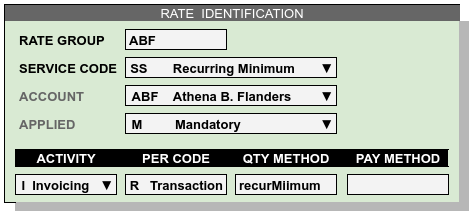
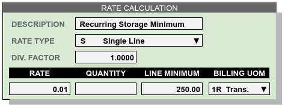

Recurring Issues and Examples¶
(Screen shots and transaction details to be added later.)
Many programs which attempt to calculate 3PL warehouse billing are not able to produce a correct bill for some common recurring methods. Fortunately there is WARES. This section provides examples of issues with recurring storage billing, activity reconciliation, and similar topics.
Tracking¶
Inventory tracking may be by unit, lot, or product. Recurring billing depends on the received date for goods, independent of the tracking method.
Recurring Methods¶
Recurring may be based on calendar periods, or on lot anniversaries.
Free Days¶
Accounts may be offered free days affecting the starting date for applying storage charges or calculating anniversaries, as well as requiring the accumulation of both receiving and recurring charges during recurring calculation.
Custom Periods¶
Accounts may require a warehouse to use their proprietary calendar period dates for reconciling inventory and calculating charges.
Recurring may be calculated by month, or by alternative time periods such as daily, weekly, or bi-weekly.
Specifically with anniversary billing, monthly charges for recurring storage may be calculated incrementally throughout the month depending on Received dates.
Inventory Reconciliation¶
Damaged goods included in recurring storage are not reported in available inventory.
Inventory reports list current balances, while Stock Activity reports audit balances at specific dates and times.
Arrears Corrections¶
Transactions may be posted in arrears, including to previous months, to correct errors such as: receiving to a wrong product code, receiving an incorrect lot number, recording hidden damage, transferring ownership, and similar problems.
When a correction entered today is posted into a calculated period, then the starting balances of a new recurring audit will not match the ending balances from the previous period. Specifically, transactions may create a recurring audit discrepancy when the span between Posted and Entered dates cross a recurring period boundary, and the Entered datetime is after the previous recurring calculation Run datetime.
When auditing recurring, transactions are selected for Posted (or Received) dates within the period and then sorted by Entered datetime. Knowing the Run datetime for the calculation, out of period transaction exceptions can be identified and accounted for.
Units of Measure¶
The units of measure for storage and handling charges can be different from the stock units for inventory movement.
Minimum Recurring Invoice¶
To avoid expending warehouse resources on non-performing accounts, a warehouse may impose a recurring invoice minimum charge. The procedure for setting up this charge is shown in the following example.
On the Rates page, enter a new rate record as follows:
This rate will be evaluated as each invoice is generated for account ABF. The quantity method recurMinimum will select all invoice lines with code 1S and this invoice number, and sum the extended column to determine an amount. Method logic will return Amount = 0 when recurring exceeds 250.00, or when an invoice has no recurring charges.
In the calculation part of the rate setup, the Factor, Rate, and Quantity are all 1.00, and the Minimum is the minimum amount of recurring to charge, if any.
Applying the rate as shown will result in adding a deficit charge line to an invoice provided the recurring total is greater than zero, but less than $250.00.